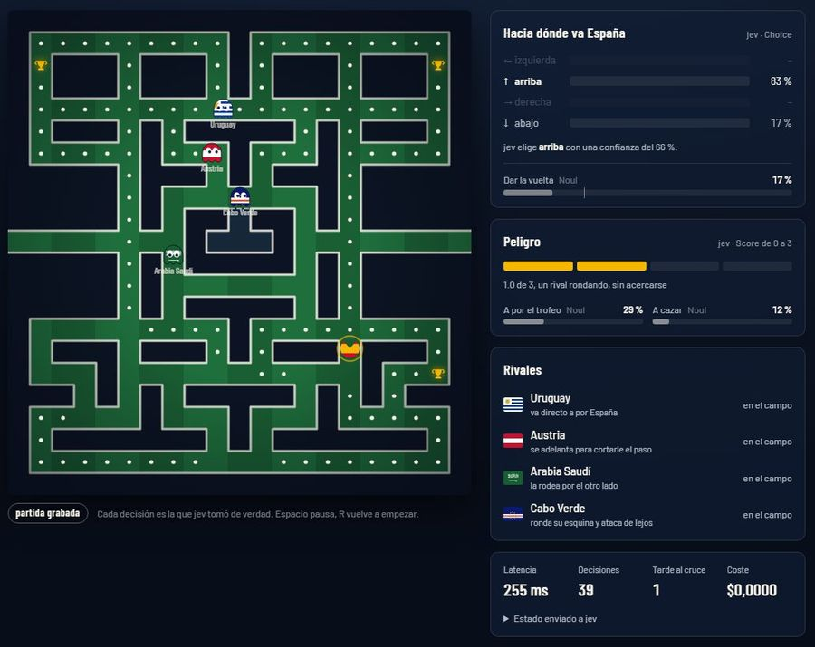
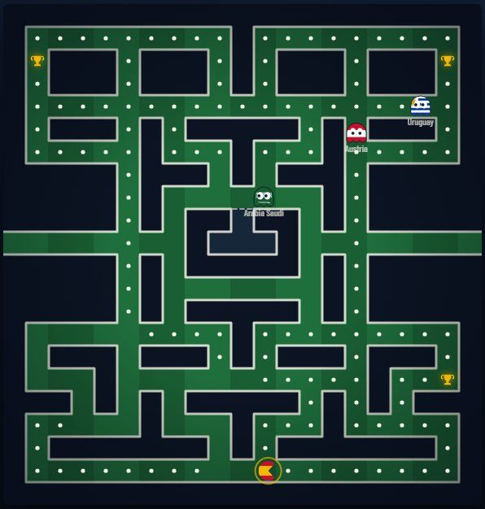

La Roja en el laberinto
decide jev, o Laya entrenada con sus decisiones
España recorre un laberinto perseguida por los rivales de su Mundial 2026. En cada cruce no decide una persona: decide un modelo, y el panel enseña qué ha elegido y con cuánta seguridad. Son partidas grabadas de verdad: la mejor de jev y la mejor de Laya.
jev: 6 de 20 ganadasLaya: 5 de 20~300 ms frente a ~60 msLaya: 0 €